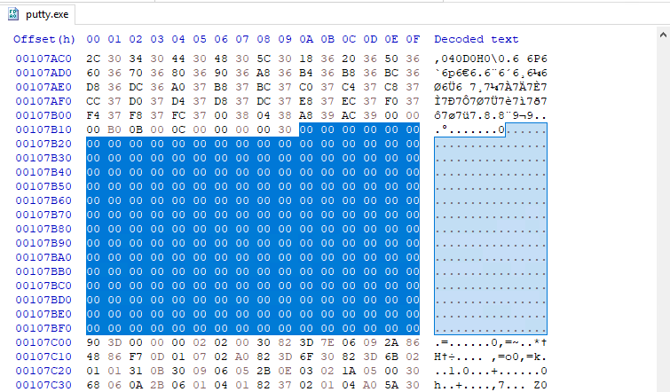

# Infecting PE Files - Find code cave -> inject into section
A code cave is unused space - a series of NULL bytes (
0x00) - inside a section.
For example:
Injecting shellcode into a code cave is more stealthy than adding a entirely new section to the PE.
Methods:
• Manually (via a code cave finding tool, CFF explorer, and HxD)
• C